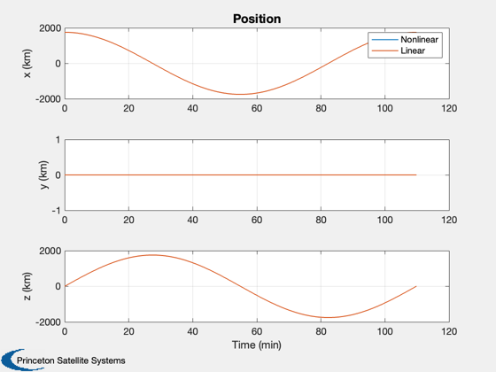

Compare the state transition matrix to numerical integration
The first test compares the state propagation to the numerical integration in a circular orbit. The second test compares a simulation with a constant thrust. This applies a constant thrust to slow the orbital velocity causing the lander to descend. This script runs the nonlinear simulation and then compares the results with the state transition matrix approach that will be used in the optimizer.
See also: PropagateState3D, RHSPlanet3D, RHSPlanet3DToAB
Contents
%-------------------------------------------------------------------------- % Copyright (c) 2015 Princeton Satellite Systems, Inc. % All rights reserved. %-------------------------------------------------------------------------- % Since 2016.1 %--------------------------------------------------------------------------
Initialize
d = RHSPlanet3D; dT = 10; x = [1753;0;0;0;0;sqrt(d.mu/1753);200]; p = Period(1753,d.mu); d.n = ceil(p/dT); d.omega = 0;
Control
d.alpha = zeros(1,d.n);
d.beta = -ones(1,d.n)*pi/2;
d.thrust = zeros(1,d.n);
d.accel = '';
Nonlinear simulation
xP = PropagateState3D( x, dT*ones(1,d.n), d );
Discrete time simulation
xD = zeros(6,d.n); xD(:,1) = xP(1:6,1); for k = 1:d.n [a,b] = RHSPlanet3DToAB( xP(:,k), d, dT ); u = [ cos(d.alpha(k))*cos(d.beta(k));... sin(d.alpha(k))*cos(d.beta(k));... sin(d.beta(k))]*d.thrust(k); xD(:,k+1) = a*xD(:,k) + b*u; end xD = [xD;Mag(xD(4:6,:)); Mag(xD(1:3,:)) - 1738]; xP = [xP;Mag(xP(4:6,:)); Mag(xP(1:3,:)) - 1738];
Plot
yL = { 'x (km)' 'y (km)' 'z (km)'...
'v_x (km/s)' 'v_y (km/s)' 'v_z (km/s)'...
'|v| (km/s)' 'h (km)'};
[t,tL] = TimeLabl((0:d.n)*dT);
lB = {'[1 4]' '[2 5]' '[3 6]'};
Plot2D(t,xP(1:3,:),tL,yL(1:3),'Nonlinear Position');
Plot2D(t,xP(4:6,:),tL,yL(4:6),'Nonlinear Velocity');
Plot2D(t,[xP(1:3,:);xD(1:3,:)],tL,yL(1:3),'Position','lin',lB);
legend('Nonlinear','Linear')
Plot2D(t,[xP(4:6,:);xD(4:6,:)],tL,yL(4:6),'Velocity','lin',lB);
legend('Nonlinear','Linear')
lB = {'[1 3]' '[2 4]' };
Plot2D(t,[xP(7:8,:);xD(7:8,:)],tL,yL(7:8),'Altitude and velocity','lin',lB);
legend('Nonlinear','Linear')
 Constant thrust
d.thrust = 30*ones(1,d.n);
Nonlinear simulation
xP = PropagateState3D( x, dT*ones(1,d.n), d ); Plot2D(t,xP(1:3,:),tL,yL(1:3),'Nonlinear Position Constant Thrust'); Plot2D(t,xP(4:6,:),tL,yL(4:6),'Nonlinear Velocity Constant Thrust'); %-------------------------------------- % PSS internal file version information %-------------------------------------- % $Id: 2279065d5f280c59bb015b6647b2447cecf4490b $